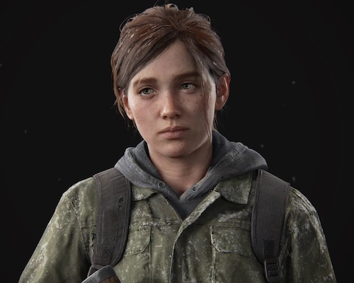
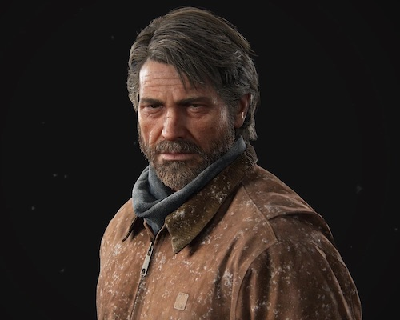
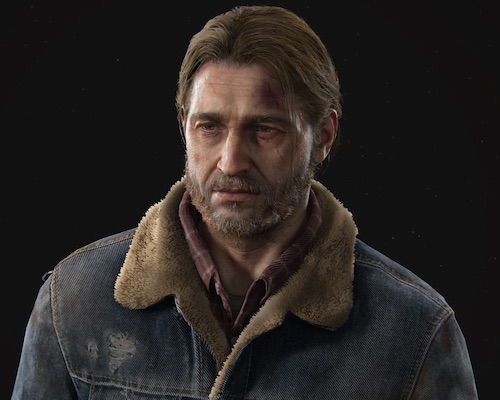
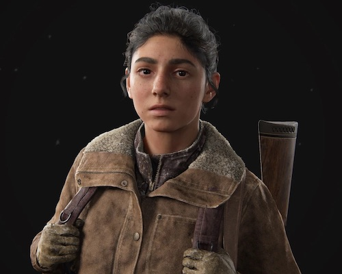
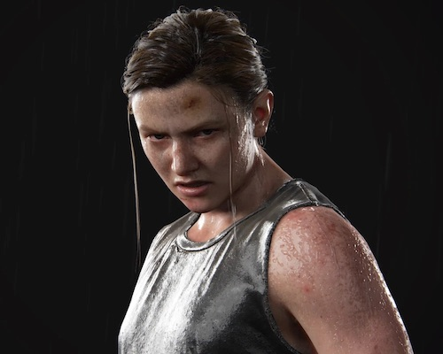

Characters
Main Characters
Ellie Williams:
Ellie Williams is the central character of The Last of Us series.She serves as the protagonist of The Last of Us: American Dreams, the playable deuteragonist of The Last of us, and the playable protagonist of both The Last of Us: Left Behind and The Last of Us Part II.
Ellie grew up as an orphan in the Boston quarantine zone and attended a military preparatory school, where she met and befriended Riley Abel. When Ellie was fourteen, the pair were both infected with the Cordyceps brain infection, where Ellie discovered she was immune. A friend of her mother's and the leader of the Fireflies, Marlene, believed that she was the key to reverse engineering a vaccine. Marlene tasked Joel Miller, a smuggler, with escorting Ellie outside of the QZ. The simple drop-off turned into a year-long journey across America, and the two eventually formed a close bond.
Upon reaching the Fireflies in Salt Lake City, Joel learned that only killing Ellie could create the cure. Refusing to allow this, he killed the head surgeon and escaped with Ellie to settle down in Jackson, his brother's community in Wyoming. For the next four years, Ellie came to resent Joel for saving her life. In 2038, Abby Anderson, a former Firefly and the surgeon's daughter, found and killed Joel. Ellie vowed revenge and pursued Abby to Seattle. Her efforts were fruitless, leading her to retire on a farm with her girlfriend Dina and her son JJ. Unable to forgive Abby, Ellie abandoned her family and pursued her once again to Santa Barbara, only to spare Abby in the end. She returned to Jackson once more, coming to terms with Joel's death and his decision to save her life.
Joel Miller:
Joel Miller is the playable protagonist of The Last of us, and a supporting character in The Last of Us: Left Behind and The Last of Us Part II, in which he is briefly playable. Joel was a survivor in post-apocalyptic America that had been ravaged by the Cordyceps brain infection. After losing his only daughter Sarah in the early stages of the outbreak, Joel became a ruthless and cynical smuggler eventually tasked with smuggling and protecting Ellie Williams, a young girl who was the key to mankind's survival. Joel eventually formed a strong bond with her.
Prior to the apocalypse, Joel was a caring father who worked hard to raise Sarah by himself.After the death of his beloved daughter Sarah, Joel's personality became more broody, damaged, apathetic and ruthless.These dark traits led others to describe him as a "violent thug, a brutal killer, and a torturer." He was shown to be able to kill his enemies with noteworthy brutality, earning him an infamous reputation to those he encountered. David called him a "crazy man." Upon meeting Ellie, he initially had a rocky relationship with her. However, Joel later grew to trust her and found her reliable at most times, such as Ellie spotting for Joel or providing support.As time passed, Joel established a father-daughter relationship with Ellie, who reminded him of his beloved daughter, Sarah.
Over the course of their journey, Joel became extremely dedicated to Ellie, using any means possible to save her and keep her safe. He tortured two cannibals to find out Ellie's location and then killed the other prisoner after he had gained information about Ellie's location. Ellie also cared greatly for Joel, spending an entire winter feeding and protecting him when he was injured, just as Joel cared for her and protected her throughout their journey. The two would go on to form a close father-daughter bond.
Tommy Miller
Tommy Miller is a supporting character in The Last of us and The Last of Us Part II. He is Joel's younger brother, and Sarah's paternal uncle.
A caring and compassionate man, Tommy survived the early years of the outbreak with Joel. However, the two separated as Tommy sought a more meaningful life than mere survival, leading him to join the Fireflies and later seek redemption through his wife, Maria, and the community of Jackson.
Dina
Dina is the deuteragonist of Ellie's story in The Last of Us Part II. She is Ellie's partner and assists her in her quest for revenge.
After Ellie and Joel found safety within Jackson, Dina became friends with the former. She also dated Jesse (another side character from the second game), though they eventually broke up.
Abby Anderson
Abigail "Abby" Anderson is the playable dual protagonist of The Last of Us Part II. A member of the Fireflies broken by tragedy when Joel Miller killed her father Jerry Anderson, Abby made it her mission to avenge Jerry's demise. However, it is only after her vengeance that she embarks on a journey with companion Lev and rediscovers purpose in her life. She's introduced in the second game and plays an important role in the plot of the game.
